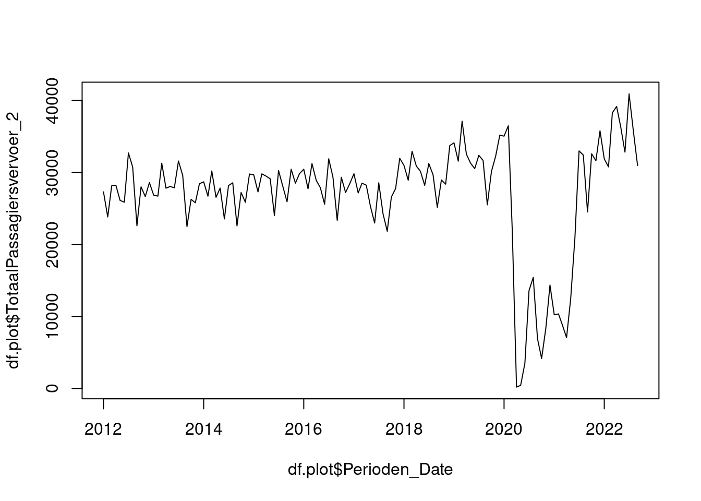

Hoofdstuk 4 Inlezen van gegevens
Bij data science gaat het over data. Het is daarom belangrijk om data te kunnen inlezen. Binnen R zijn er diverse methoden om data in te lezen. Dit hoofdstuk behandelt een aantal gangbare methoden.
4.2 Gebruik van api
Het is over het algemeen aan te bevelen om gebruik te maken van api’s om data binnen te lezen. Dit heeft namelijk een aantal voordelen:
- Het beperkt het aantal handelingen. Het is niet nodig om eerst handmatig de data te downloaden, ergens op te slaan en vervolgens in te lezen met R.
- Het is eenvoudiger deelbaar en reproduceerbaar. Anderen hebben genoeg aan uw R code om het inlezen van de data te reproduceren. Het is niet nodig data-bestanden te delen of (uitgebreid) te beschrijven hoe de data gedownload moet worden.
Indien mogelijk verdient het dan ook de voorkeur om via api’s de data in te lezen.
In de code hieronder wordt gebruik gemaakt van een api van het CBS. Deze api stelt gebruikers in staat om elke publieke data-tabel van het CBS automatisch te downloaden. Om gebruik te maken van deze api zou je zelf de juiste url met parameters kunnen samenstellen. Het is echter eenvoudiger om van het R-pakket cbsodataR gebruik te maken. Dat kan als volgt:
# inladen van het pakket
library(cbsodataR)
# ophalen van de data
df <- cbs_get_data(
id = "82332NED"
)
# wat zit er in de data?
knitr::kable(head(df))| LuchthavensCaribischNederland | Perioden | Vliegtuigbewegingen_1 | TotaalPassagiersvervoer_2 | AangekomenPassagiers_3 | VertrokkenPassagiers_4 |
|---|---|---|---|---|---|
| A045912 | 2012MM01 | 2080 | 33550 | 17540 | 16010 |
| A045912 | 2012MM02 | 1930 | 29710 | 14980 | 14730 |
| A045912 | 2012MM03 | 2200 | 35170 | 17240 | 17930 |
| A045912 | 2012KW01 | 6210 | 98430 | 49760 | 48670 |
| A045912 | 2012MM04 | 2170 | 34790 | 17430 | 17360 |
| A045912 | 2012MM05 | 2220 | 32580 | 15790 | 16780 |
Deze data bevat de vluchtbewegingen van een aantal luchthavens in het Nederlands Caribische gebied. De codes zijn echter moeilijk interpreteerbaar. Dat geldt in mindere mate ook voor de datum. Het is daarom aan te bevelen om deze om te zetten naar kolommen die gemakkelijker door mensen gelezen en begrepen kunnen worden. Dat kan als volgt:
df <- cbs_add_label_columns(df)
df <- cbs_add_date_column(df)df.plot <- df[grepl("Bonaire", df$LuchthavensCaribischNederland_label),]
df.plot <- df.plot[df.plot$Perioden_freq=="M",]
plot(df.plot$Perioden_Date, df.plot$TotaalPassagiersvervoer_2, type="l")